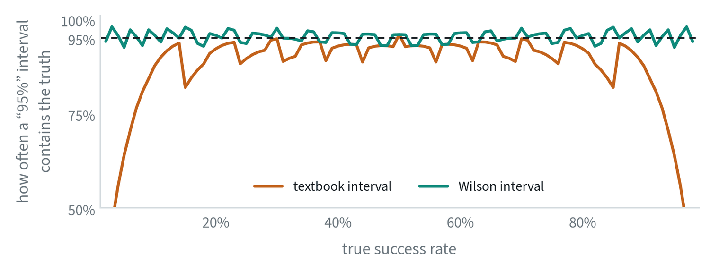

Start by defining success
Before any trial is run, write down what counts. A success definition that is decided afterwards drifts toward whatever the favoured model did.
- The end state. State it so that two people would agree: “the mug is upright on the shelf and the gripper has released it”, not “the mug was put away”.
- The limits. A time limit, a number of allowed retries, and whether a person may reset anything.
- What disqualifies. Knocking over another object, excessive force, leaving the workspace.
- Who decides. A person following the written rule, or an automatic check that has itself been tested against people.
Record every trial on video. Disputes about a borderline case are settled by watching it against the written definition.
Four counts and the ratios built on them
For any yes-or-no decision, four counts tell the whole story. Every named metric is a ratio of them.

- Precision = TP / (TP + FP). When the model says yes, how often is it right?
- Recall = TP / (TP + FN). Of the real positives, how many did it find?
- Specificity = TN / (TN + FP). Of the real negatives, how many did it reject?
- F1 is the harmonic mean of precision and recall.
Accuracy hides which kind of mistake a model makes. A detector for a rare failure can be 99% accurate by always answering no, and its recall would be zero. These measures still matter in robotics for the components around a policy: grasp-success detectors, object detectors and anomaly monitors.
Count your trials
Robot evaluations are slow, so the number of trials is small, and small samples carry wide error bars.

| Trials | Successes | Measured | 95% interval |
|---|---|---|---|
| 10 | 7 | 70% | 40% to 89% |
| 20 | 14 | 70% | 48% to 85% |
| 50 | 35 | 70% | 56% to 81% |
| 100 | 70 | 70% | 60% to 78% |
| 200 | 140 | 70% | 63% to 76% |
Ten trials cannot tell 70% from 50%. Report the number of trials and an interval with every success rate. A fair test also needs a protocol written before the first run: the tasks, the object positions, and what counts as success. Every model should face the same positions, lighting and time limit, and where possible the operator should not know which model is running.
The interval, written out
With successes in trials, the observed rate is . The textbook interval adds and subtracts a multiple of the estimated standard error:
with for 95%. It fails exactly where robot evaluation lives: small and rates near 0 or 1. At 20 successes out of 20 it gives an interval of zero width. The Wilson interval corrects this by solving for the true rates consistent with the observation, which shifts the centre toward one half and never collapses:


With 20 trials and a true success rate of 90%, the textbook interval contains the truth 88% of the time, and near the extremes it falls as low as 33%. The Wilson interval stays between 92% and 100% throughout. For 20 out of 20 it gives 84% to 100%, which is the honest summary of twenty successes.
Comparing two policies
The usual question is not “how good is this policy?” but “is the new one better than the old one?”. That needs far more trials than most people run.

To detect a real 10-point improvement reliably takes about 390 trials of each policy. A 20-point improvement takes about 90, and a 30-point one about 40. With 20 trials each, a policy that is truly 10 points worse will tie or beat the better one in 31% of comparisons.
Three things make a small budget go further.
- Pair the trials. Run both policies from the same starting layouts, and compare layout by layout. Differences between layouts then cancel out.
- Interleave. Alternate the policies during the session so that lighting, battery level and wear affect both alike.
- Call small gaps ties. If the intervals overlap heavily, the honest report is “no measurable difference”.
Testing a difference
To compare two policies, compute an interval for the difference and see whether it excludes zero. For independent trials, with rates from trials:
The number of trials needed per policy to detect a true difference with 80% power at the 5% level is approximately
which is where the figures above come from: near a 50% success rate gives about 390. The in the denominator is the whole difficulty. Halving the difference to be detected quadruples the trials.
Paired trials do much better. Run both policies from the same initial conditions and look only at the pairs where they disagree: pairs where the first succeeds and the second fails, and the reverse. Under the hypothesis of no difference, each disagreement is a coin flip, so the test is whether out of is plausibly a fair coin. This is McNemar’s test. The conditions on which both succeed or both fail, which is most of them, drop out, and with them most of the noise.
Two further cautions. Testing after every few trials and stopping as soon as the difference looks significant inflates the false-positive rate well beyond 5%, so fix the number of trials in advance or use a sequential test designed for stopping early. And comparing many checkpoints or many tasks produces some “significant” differences by chance alone. With twenty comparisons at the 5% level, one false positive is expected.
Partial credit

Success or failure throws away most of what a trial shows. Scoring the stages of a task (reached, grasped, lifted, placed) gives a finer measure from the same trials and says where to work next. Define the stages before testing, as with everything else in the protocol.
What a single number hides
An average over tasks can conceal exactly the failures that matter. Break results down along the ways a robot can be surprised: new object positions, new objects of a familiar kind, new scenes and lighting, and new wording of the instruction.
- Saturation. When every method scores above 95% on a benchmark, the differences between them are mostly noise.
- Contamination. The test tasks may already be in the pretraining data.
- Simulation only. A score in simulation may not carry over to hardware.
Then watch the failures. Label each one (perception, grasp, wrong object, timing, recovery), count the labels, and work on the largest group.
Cheaper stand-ins, and how far to trust them
Real trials are slow, so teams lean on two substitutes.
- Error on held-out demonstrations. It is quick and catches broken training runs. It is a weak predictor of success, because a policy can match recorded actions closely and still fail in the loop. The first note shows a policy that does exactly that.
- Simulation. It gives thousands of repeatable trials. Simulated benchmarks such as LIBERO are useful for comparing methods under identical conditions, and simulated copies of real setups have been built specifically so that scores track real-robot results.
The test for either stand-in is the same: take several policies, rank them by the cheap measure and by real trials, and see whether the rankings agree. Until that has been checked for your setup, treat the cheap number as a filter and not a verdict.
Held-out scenes
A policy tested where it was trained is being tested on its memory. Keep some scenes, objects and layouts out of all training and tuning, and report results on them separately from results on familiar ones. The gap between the two numbers is the most useful single measure of generalisation. The note on data efficiency and generalisation lists the axes to hold out along.
A held-out set stays held out only if nobody tunes against it. Once decisions have been made by looking at its results, it has become a second training set, and a new one is needed.
Deployment metrics
Success rate on a test bench answers “can it do the task?”. A deployed robot is judged on different questions: how much work it does, and how much attention it needs.
| Metric | What it measures |
|---|---|
| Interventions per hour | How often a person had to step in. The headline number for autonomy. |
| Time between interventions | The same thing from the other side: how long the robot runs alone. |
| Throughput | Tasks completed per hour, usually against a person doing the same job. |
| Success over long runs | Success across hours of continuous work, where small failure rates compound. |
| Recovery rate | The share of its own errors the robot corrects without help. |
| Safety events | Stops triggered, limits reached, contacts above threshold. |
| Uptime | The share of scheduled time the system was able to work at all. |
These can move in opposite directions from the bench number. A policy that succeeds slightly less often and recovers from its own failures may need far fewer interventions, and that is the one to ship.
Common mistakes
- A percentage with no count. “80% success” means little without the number of trials.
- Unequal conditions. Comparing models tested on different days, positions or lighting.
- Tuning on the test tasks. Each choice made against the test set leaks a little of it into the model.
- Declaring a winner on 20 trials. Work out how many trials the gap you care about needs before running any.
Terms
- Closed-loop evaluation
- Running the policy so its actions affect what it sees next.
- Confidence interval
- The range the true rate plausibly lies in, given the trials run.
- Calibration
- Whether “90% confident” is right 90% of the time.
- Held-out
- Data or tasks the model never saw in training.
- Statistical power
- The chance that a test detects a difference that is really there.
- Paired comparison
- Testing two policies under the same conditions, trial by trial.
- Intervention
- A person stepping in to correct or rescue the robot.
- Throughput
- The amount of completed work per unit of time.
- Wilson interval
- A confidence interval for a proportion that stays accurate for small samples and rates near 0 or 1.
- McNemar’s test
- A test for paired yes-or-no outcomes that uses only the pairs on which the two methods disagree.
- Multiple comparisons
- The inflation of false positives that comes from running many tests.
Further reading
- Liu et al., 2023. LIBERO: Benchmarking Knowledge Transfer for Lifelong Robot Learning.
- Wilson, 1927. Probable Inference, the Law of Succession, and Statistical Inference. Journal of the American Statistical Association.
- Li et al., 2024. Evaluating Real-World Robot Manipulation Policies in Simulation (SIMPLER).
- Atreya et al., 2025. RoboArena: Distributed Real-World Evaluation of Generalist Robot Policies.